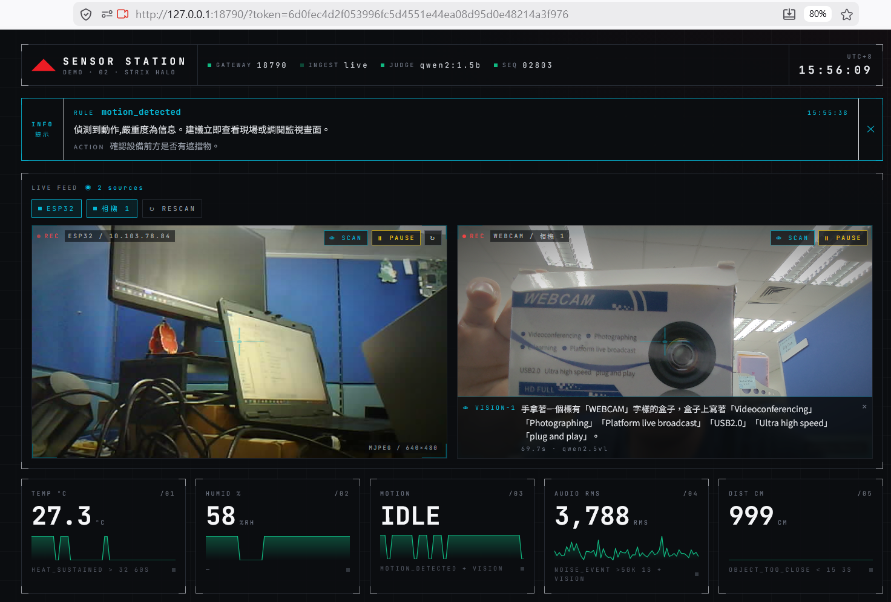
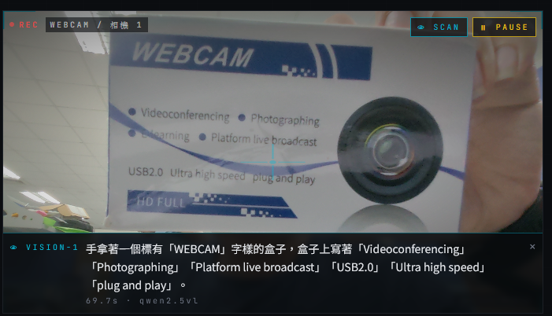
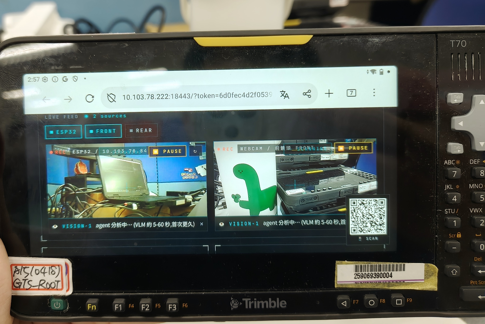

A B C D
A agent 中文警報(motion_detected / 嚴重度 info / 建議動作)·
B 雙鏡頭即時影像(ESP32 + USB Webcam)·
C visual agent 即時場景描述 ·
D 5 條感測即時數值 + sparkline + 對應規則
驗證 Strix Halo 本機推論能力 · 多端 sensor 接 OpenClaw agent 自動判斷與通知 · 100% 離線 / 無雲
證明本機可 local 跑模型 不上雲、不依賴外網,並量化效能。 現:Surface CPU ~25s · 目標:Strix Halo 3-5s。
最終以 Ollama gemma4 取代過渡模型,搭 OpenClaw agent 做代理、條件通知、判斷後動作。 現以 qwen2 / qwen2.5vl 驗 pipeline。
主機為中樞,搭 Trimble T70 等行動端走區網,加上 外接 sensor / 鏡頭,agent 接訊號決定下一步。 已驗:Surface + Android + ESP32。
| 能力 | 具體成果 |
|---|---|
| 邊緣感測串流 | 5 種訊號(溫 / 濕 / 動作 / 距離 / 音量)1Hz 上 dashboard,所有裝置即時同步 |
| 事件規則引擎 | YAML 設定式規則,4 條已上線(熱、動作、近距、音量),毫秒級觸發、不依賴 LLM |
| LLM 中文事件解釋 | 規則 fire → agent 自動寫一句中文「發生什麼 + 建議動作」(見下圖 A 區) |
| 視覺 LLM 場景描述 | 動作 / 拍手 / 手動 SCAN → agent 拍照 → 中文描述「看到什麼」(見特寫圖) |
| 反控執行 | 規則或人手觸發 → 蜂鳴器、LED、鏡頭旋轉 — 證明 agent 能 act on 訊號 |
| 多端同步 | 手機掃 QR 進同一 dashboard,事件、警報、AI 描述跨裝置即時一致 |

A B C D
